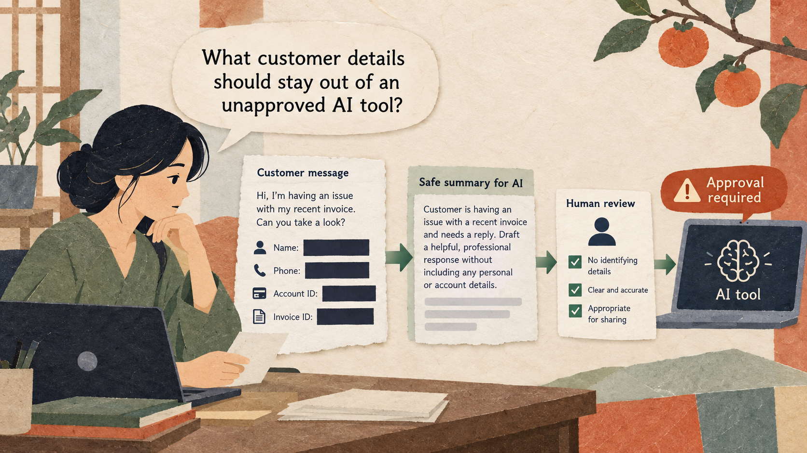

Situation
The problem
An employee wants AI to draft a customer response, but the source message contains identifying and account information that should not be pasted into an unapproved tool.

3 hours: 50-minute lesson, 10-minute break, 50-minute guided practice, 10-minute break, 50-minute applied practice, and 10-minute wrap-up.
An employee wants AI to draft a customer response, but the source message contains identifying and account information that should not be pasted into an unapproved tool.
Identify sensitive information, minimize or replace it when permitted, and check workplace rules before using AI.
Practice material: Use the practice material supplied in the session Markdown.
Do not replace missing information with guesses.
An employee wants AI to draft a customer response, but the source message contains identifying and account information that should not be pasted into an unapproved tool.
Keep each concept tied to the practical decision.
These examples come from the current session scenario.
Here is Mina's phone and account number. Write a reply.
I removed her name, so this is definitely anonymous; decide whether she deserves compensation.
Keep the source, task, constraints, and output check visible.
Before using AI, list the data fields in this sample that should be removed or replaced. Do not draft a reply or repeat the identifiers.
Assume company policy permits an approved AI tool for this task. Draft a neutral reply using only: item arrived damaged; customer asks for next steps. Ask the customer to use the secure support channel to provide order details. Do not promise a refund or repeat identifying information.
Use the complete case and instructions from the session Markdown.
Use the complete case and instructions from the session Markdown.
Check the output before sharing or acting on it.